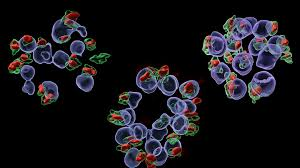

This project leverages Google Generative AI to transform natural language queries into SQL statements and generate visualizations based on the resulting data. It simplifies data interaction by allowing users to input queries in plain English, which are then processed to produce relevant charts and insights.

This project involved developing an object segmentation model to identify and localize malaria cells in blood samples using bounding boxes. The model significantly improved disease detection accuracy by providing precise cell localization, which aids in better diagnosis and treatment.

This project focuses on diagnosing plant diseases through image analysis. Using deep learning models, the system detects various plant diseases from leaf images, helping farmers to identify and manage plant health issues efficiently. The approach enhances agricultural productivity by providing timely disease diagnosis.

This blog explores the encoder-decoder architecture used in machine translation, covering the core concepts of the model, including how the encoder processes the input sequence and the decoder generates the output sequence, aiming to achieve accurate and meaningful translations between languages.

This blog provides an in-depth exploration of t-SNE (t-Distributed Stochastic Neighbor Embedding), a technique used for visualizing high-dimensional data. It explains how t-SNE works, its applications, and how it can be used to reveal the underlying structure in complex datasets.

This blog explores agglomerative clustering, a type of hierarchical clustering technique. It explains the algorithm, its implementation, and the scenarios where it can be effectively used to group similar data points together.